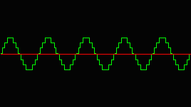

PCM (digital audio) interface
Although abbreviation PCM stands for Pulse Code Modulation, we are understanding it as general digital audio processing with volume samples generated in continuous time periods.
The analog signal is recorded via analog to digital converters (ADC). The digital value (de-facto a volume at a specific time) obtained from ADC can be further processed. The following picture shows a perfect sinus waveform:

Next image shows digitized representation:
As you may see, the quality of digital audio signal depends on the time (recording rate) and voltage resolution (usually in an linear integer representation with basic unit one bit).
The stored digital signal can be converted back to voltage (analog) representation via digital to analog converters (DAC).
One digital value is called sample. More samples are collected to frames (frame is terminology for ALSA) depending on count of converters used at one specific time. One frame might contain one sample (when only one converter is used - mono) or more samples (for example: stereo has signals from two converters recorded at same time). Digital audio stream contains collection of frames recorded at boundaries of continuous time periods.
General overview
ALSA uses the ring buffer to store outgoing (playback) and incoming (capture, record) samples. There are two pointers being maintained to allow a precise communication between application and device pointing to current processed sample by hardware and last processed sample by application. The modern audio chips allow to program the transfer time periods. It means that the stream of samples is divided to small chunks. Device acknowledges to application when the transfer of a chunk is complete.
Transfer methods in UNIX environments
In the UNIX environment, data chunk acknowledges are received via standard I/O calls or event waiting routines (poll or select function). To accomplish this list, the asynchronous notification of acknowledges should be listed here. The ALSA implementation for these methods is described in the ALSA transfers section.
Standard I/O transfers
The standard I/O transfers are using the read (see ‘man 2 read’) and write (see ‘man 2 write’) C functions. There are two basic behaviours of these functions - blocked and non-blocked (see the O_NONBLOCK flag for the standard C open function - see ‘man 2 open’). In non-blocked behaviour, these I/O functions never stops, they return -EAGAIN error code, when no data can be transferred (the ring buffer is full in our case). In blocked behaviour, these I/O functions stop and wait until there is a room in the ring buffer (playback) or until there are a new samples (capture). The ALSA implementation can be found in the Read / Write transfer section.
Event waiting routines
The poll or select functions (see ‘man 2 poll’ or ‘man 2 select’ for further details) allows to receive requests/events from the device while an application is waiting on events from other sources (like keyboard, screen, network etc.), too. snd_pcm_poll_descriptors can be used to get file descriptors to poll or select on (note that wait direction might be different than expected - do not use only returned file descriptors, but handle events member as well - see snd_pcm_poll_descriptors function description for more details and snd_pcm_poll_descriptors_revents for events demangling). The implemented transfer routines can be found in the ALSA transfers section.
Asynchronous notification
ALSA driver and library knows to handle the asynchronous notifications over the SIGIO signal. This signal allows to interrupt application and transfer data in the signal handler. For further details see the sigaction function (‘man 2 sigaction’). The section Asynchronous mode describes the ALSA API for this extension. The implemented transfer routines can be found in the ALSA transfers section.
Blocked and non-blocked open
The ALSA PCM API uses a different behaviour when the device is opened with blocked or non-blocked mode. The mode can be specified with mode argument in snd_pcm_open() function. The blocked mode is the default (without SND_PCM_NONBLOCK mode). In this mode, the behaviour is that if the resources have already used with another application, then it blocks the caller, until resources are free. The non-blocked behaviour (with SND_PCM_NONBLOCK) doesn’t block the caller in any way and returns -EBUSY error when the resources are not available. Note that the mode also determines the behaviour of standard I/O calls, returning -EAGAIN when non-blocked mode is used and the ring buffer is full (playback) or empty (capture). The operation mode for I/O calls can be changed later with the snd_pcm_nonblock() function.
Asynchronous mode
There is also possibility to receive asynchronous notification after specified time periods. You may see the SND_PCM_ASYNC mode for snd_pcm_open() function and snd_async_add_pcm_handler() function for further details.
Handshake between application and library
The ALSA PCM API design uses the states to determine the communication phase between application and library. The actual state can be determined using snd_pcm_state() call. There are these states:
The PCM device is in the open state. After the snd_pcm_open() open call, the device is in this state. Also, when snd_pcm_hw_params() call fails, then this state is entered to force application calling snd_pcm_hw_params() function to set right communication parameters.
The PCM device has accepted communication parameters and it is waiting for snd_pcm_prepare() call to prepare the hardware for selected operation (playback or capture).
The PCM device is prepared for operation. Application can use snd_pcm_start() call, write or read data to start the operation.
The PCM device has been started and is running. It processes the samples. The stream can be stopped using the snd_pcm_drop() or snd_pcm_drain() calls.
The PCM device reached overrun (capture) or underrun (playback). You can use the -EPIPE return code from I/O functions (snd_pcm_writei(), snd_pcm_writen(), snd_pcm_readi(), snd_pcm_readn()) to determine this state without checking the actual state via snd_pcm_state() call. It is recommended to use the helper function snd_pcm_recover() to recover from this state, but you can also use snd_pcm_prepare(), snd_pcm_drop() or snd_pcm_drain() calls.
The device is in this state when application using the capture mode called snd_pcm_drain() function. Until all data are read from the internal ring buffer using I/O routines (snd_pcm_readi(), snd_pcm_readn()), then the device stays in this state.
The device is in this state when application called the snd_pcm_pause() function until the pause is released. Not all hardware supports this feature. Application should check the capability with the snd_pcm_hw_params_can_pause().
The device is in the suspend state provoked with the power management system. The stream can be resumed using snd_pcm_resume() call, but not all hardware supports this feature. Application should check the capability with the snd_pcm_hw_params_can_resume(). In other case, the calls snd_pcm_prepare(), snd_pcm_drop(), snd_pcm_drain() can be used to leave this state.
The device is physicaly disconnected. It does not accept any I/O calls in this state.
PCM formats
The full list of formats present the snd_pcm_format_t type. The 24-bit linear samples use 32-bit physical space, but the sample is stored in the lower three bytes. Some hardware does not support processing of full range, thus you may get the significant bits for linear samples via snd_pcm_hw_params_get_sbits() function. The example: ICE1712 chips support 32-bit sample processing, but low byte is ignored (playback) or zero (capture). The function snd_pcm_hw_params_get_sbits() returns 24 in this case.
ALSA transfers
There are two methods to transfer samples in application. The first method is the standard read / write one. The second method, uses the direct audio buffer to communicate with the device while ALSA library manages this space itself. You can find examples of all communication schemes for playback in Sine-wave generator example. To complete the list, we should note that snd_pcm_wait() function contains embedded poll waiting implementation.
Read / Write transfer
There are two versions of read / write routines. The first expects the interleaved samples at input (SND_PCM_ACCESS_RW_INTERLEAVED access method), and the second one expects non-interleaved (samples in separated buffers - SND_PCM_ACCESS_RW_NONINTERLEAVED access method) at input. There are these functions for interleaved transfers: snd_pcm_writei() snd_pcm_readi(). For non-interleaved transfers, there are these functions: snd_pcm_writen() and snd_pcm_readn().
Direct Read / Write transfer (via mmap’ed areas)
Three kinds of organization of ring buffer memory areas exist in ALSA API. Access SND_PCM_ACCESS_MMAP_INTERLEAVED has interleaved samples. Access SND_PCM_ACCESS_MMAP_NONINTERLEAVED expects continous sample areas for one channel. Access SND_PCM_ACCESS_MMAP_COMPLEX does not fit to interleaved and non-interleaved ring buffer organization.
There are two functions for this kind of transfer. Application can get an access to memory areas via snd_pcm_mmap_begin() function. This function returns the areas (single area is equal to a channel) containing the direct pointers to memory and sample position description in snd_pcm_channel_area_t structure. After application transfers the data in the memory areas, then it must be acknowledged the end of transfer via snd_pcm_mmap_commit() function to allow the ALSA library update the pointers to ring buffer. This kind of communication is also called “zero-copy”, because the device does not require to copy the samples from application to another place in system memory.
If you like to use the compatibility functions in mmap mode, there are read / write routines equaling to standard read / write transfers. Using these functions discards the benefits of direct access to memory region. See the snd_pcm_mmap_readi(), snd_pcm_mmap_writei(), snd_pcm_mmap_readn() and snd_pcm_mmap_writen() functions. These functions use snd_pcm_areas_copy() internally.
Error codes
This error means xrun (underrun for playback or overrun for capture). The underrun can happen when an application does not feed new samples in time to alsa-lib (due CPU usage). The overrun can happen when an application does not take new captured samples in time from alsa-lib.
This error means that system has suspended drivers. The application should wait in loop when snd_pcm_resume()!= -EAGAIN and then call snd_pcm_prepare() when snd_pcm_resume() return an error code. If snd_pcm_resume() does not fail (a zero value is returned), driver supports resume and the snd_pcm_prepare() call can be ommited.
This error means that the device is in a bad state. It means that the handskahe between application and alsa-lib is corrupted.
This error can happen when device is physically removed (for example some hotplug devices like USB or PCMCIA, CardBus or ExpressCard can be removed on the fly).
Managing parameters
The ALSA PCM device uses two groups of PCM related parameters. The hardware parameters contains the stream description like format, rate, count of channels, ring buffer size etc. The software parameters contains the software (driver) related parameters. The communication behaviour can be controlled via these parameters, like automatic start, automatic stop, interrupting (chunk acknowledge) etc. The software parameters can be modified at any time (when valid hardware parameters are set). It includes the running state as well.
Obtaining stream status
The stream status is stored in snd_pcm_status_t structure. These parameters can be obtained: the current stream state - snd_pcm_status_get_state(), timestamp of trigger - snd_pcm_status_get_trigger_tstamp(), timestamp of last pointer update snd_pcm_status_get_tstamp(), delay in samples - snd_pcm_status_get_delay(), available count in samples - snd_pcm_status_get_avail(), maximum available samples - snd_pcm_status_get_avail_max(), ADC over-range count in samples - snd_pcm_status_get_overrange(). The last two parameters - avail_max and overrange are reset to zero after the status call.
Obtaining stream state fast and update r/w pointer
The function snd_pcm_avail_update() updates the current available count of samples for writing (playback) or filled samples for reading (capture). This call is mandatory for updating actual r/w pointer. Using standalone, it is a light method to obtain current stream position, because it does not require the user <-> kernel context switch, but the value is less accurate, because ring buffer pointers are updated in kernel drivers only when an interrupt occurs. If you want to get accurate stream state, use functions snd_pcm_avail(), snd_pcm_delay() or snd_pcm_avail_delay().
The function snd_pcm_avail() reads the current hardware pointer in the ring buffer from hardware and calls snd_pcm_avail_update() then.
The function snd_pcm_delay() returns the delay in samples. For playback, it means count of samples in the ring buffer before the next sample will be sent to DAC. For capture, it means count of samples in the ring buffer before the next sample will be captured from ADC. It works only when the stream is in the running or draining (playback only) state. Note that this function does not update the current r/w pointer for applications, so the function snd_pcm_avail_update() must be called afterwards before any read/write begin+commit operations.
The function snd_pcm_avail_delay() combines snd_pcm_avail() and snd_pcm_delay() and returns both values in sync.
Managing the stream state
The following functions directly and indirectly affect the stream state:
The snd_pcm_hw_params() function brings the stream state to SND_PCM_STATE_SETUP if successfully finishes, otherwise the state SND_PCM_STATE_OPEN is entered. When it is brought to SETUP state, this function automatically calls snd_pcm_prepare() function to bring to the PREPARED state as below.
The snd_pcm_prepare() function enters from SND_PCM_STATE_SETUP to the SND_PCM_STATE_PREPARED after a successful finish.
The snd_pcm_start() function enters the SND_PCM_STATE_RUNNING after a successful finish.
The snd_pcm_drop() function enters the SND_PCM_STATE_SETUP state.
The snd_pcm_drain() function enters the SND_PCM_STATE_DRAINING, if the capture device has some samples in the ring buffer otherwise SND_PCM_STATE_SETUP state is entered.
The snd_pcm_pause() function enters the SND_PCM_STATE_PAUSED or SND_PCM_STATE_RUNNING.
The snd_pcm_writei() and snd_pcm_writen() functions can conditionally start the stream - SND_PCM_STATE_RUNNING. They depend on the start threshold software parameter.
The snd_pcm_readi() and snd_pcm_readn() functions can conditionally start the stream - SND_PCM_STATE_RUNNING. They depend on the start threshold software parameter.
Streams synchronization
There are two functions allowing link multiple streams together. In the case, the linking means that all operations are synchronized. Because the drivers cannot guarantee the synchronization (sample resolution) on hardware lacking this feature, the snd_pcm_info_get_sync() function returns synchronization ID - snd_pcm_sync_id_t, which is equal for hardware synchronized streams. When the snd_pcm_link() function is called, all operations managing the stream state for these two streams are joined. The opposite function is snd_pcm_unlink().
Thread-safety
When the library is configured with the proper option, some PCM functions (e.g. snd_pcm_avail_update()) are thread-safe and can be called concurrently from multiple threads. Meanwhile, some functions (e.g. snd_pcm_hw_params()) aren’t thread-safe, and application needs to call them carefully when they are called from multiple threads. In general, all the functions that are often called during streaming are covered as thread-safe.
This thread-safe behavior can be disabled also by passing 0 to the environment variable LIBASOUND_THREAD_SAFE, e.g.
LIBASOUND_THREAD_SAFE=0 aplay foo.wav
for making the debugging easier.
PCM naming conventions
The ALSA library uses a generic string representation for names of devices. The devices might be virtual, physical or a mix of both. The generic string is passed to snd_pcm_open() or snd_pcm_open_lconf(). It contains two parts: device name and arguments. Devices and arguments are described in configuration files. The usual place for default definitions is at /usr/share/alsa/alsa.conf. For detailed descriptions about integrated PCM plugins look to PCM (digital audio) plugins.
Default device
The default device is equal to plug plugin with hw plugin as slave. The defaults are used:
defaults.pcm.card 0 defaults.pcm.device 0 defaults.pcm.subdevice -1
These defaults can be freely overwritten in local configuration files.
Example:
default
HW device
The hw device description uses the hw plugin. The three arguments (in order: CARD,DEV,SUBDEV) specify card number or identifier, device number and subdevice number (-1 means any).
Example:
hw hw:0 hw:0,0 hw:supersonic,1 hw:soundwave,1,2 hw:DEV=1,CARD=soundwave,SUBDEV=2
Plug->HW device
The plughw device description uses the plug plugin and hw plugin as slave. The arguments are same as for hw device.
Example:
plughw plughw:0 plughw:0,0 plughw:supersonic,1 plughw:soundwave,1,2 plughw:DEV=1,CARD=soundwave,SUBDEV=2
Plug device
The plug device uses the plug plugin. The one SLAVE argument specifies the slave plugin.
Example:
plug:mypcmdef plug:hw plug:'hw:0,0' plug:SLAVE=hw
Tee device
The tee device stores contents of a stream to given file plus transfers it to given slave plugin. The three arguments (in order: SLAVE,FILE,FORMAT) specify slave plugin, filename and file format.
Example:
tee:hw,'/tmp/out.raw',raw
File device
The file device is file plugin with null plugin as slave. The arguments (in order: FILE,FORMAT) specify filename and file format.
Example:
file:'/tmp/out.raw',raw
Null device
The null device is null plugin. This device has not any arguments.
Examples
The full featured examples with cross-links can be found in Examples section (see top of page):
alsa-lib/test/pcm.c example shows various transfer methods for the playback direction.
alsa-lib/test/pcm_min.c example shows the minimal code to produce a sound.
alsa-lib/test/latency.c example shows the measuring of minimal latency between capture and playback devices.